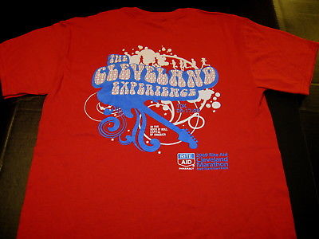

This is a quick snapshot of my hobbies, as well as a link back to my main webpage.

Ran the Columbus Half both times, in 2017 and in 2018. 2017 netted me a time of 1:45:46, which wasn't bad, but it was 68'F and 93% humidity that day. I eventually will run the full version.

I have not run the CLE Marathon, technically, but know others who have, and have run on part of the race course.
I have not run on Flying Pig yet, but plan on doing so this spring. It looks challenging!